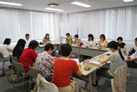

|
|
■議 題
「国消団連としてやってきた事」全国の消費者団体をつなぐ ・消費者の情報把握をサポートする ・理解と連帯の輪を広げる・・・国際消費者機構世界大会参加 ・｢ホントのこと知りたい学習シリーズ｣を行う 「全国消団連としてやるべき事」 ・消費者に正確な情報を発信し、購買行動をサポートする ・企業と事業者とのコミュニケーション強化 ・復興対策、エネルギー政策に対し、消費者の立場から積極的に意見を提出する 《意見交換》 （1）第2回食の安全オンブズ会議報告、第1回食の安全・安心消費者懇談会（7/11） （2）埼玉県計量検定所「夏休み親子計量教室」（さいたまコープとの共催） （3）埼玉県食の安全県民会議（8/29） （4）「平成22年度食品衛生監視指導計画の結果」の概要 ・放射能汚染問題について、埼玉県へ要望書を提出します。 |